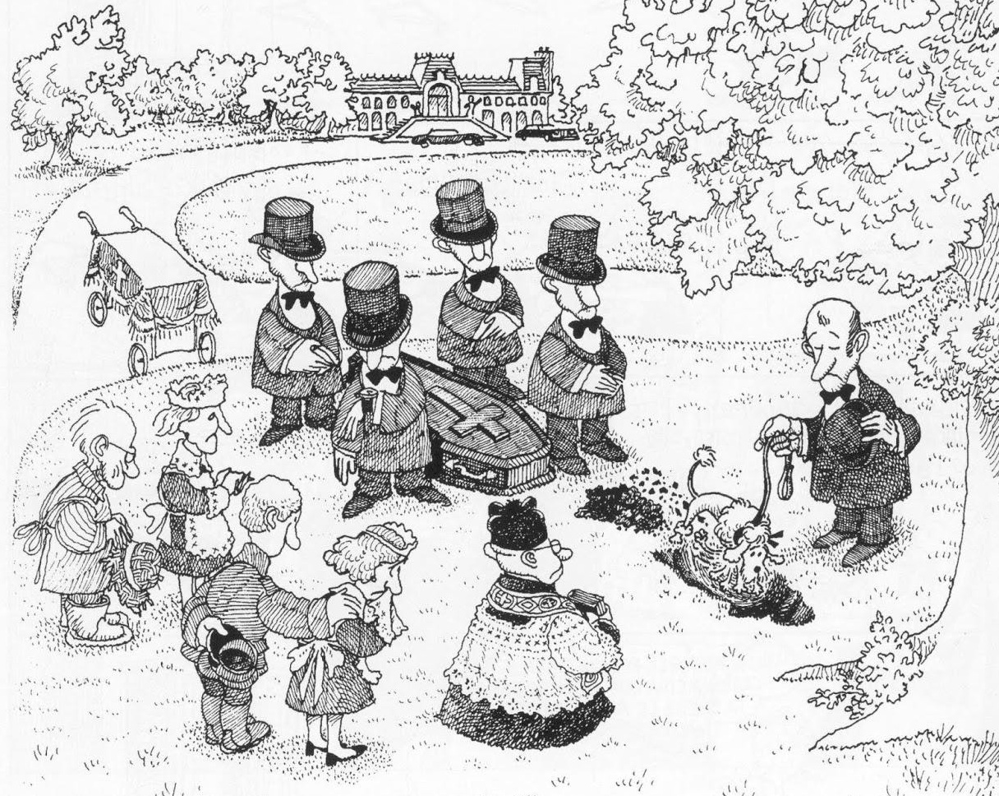

Las teorías de la incongruencia han tenido algunas limitaciones por estar basadas en concepciones intelectualistas de las emociones. Entre esos se encuentran dificultades sobre el valor epistémico del humor: ¿aporta o no conocimiento?
Tomar una teoría diferente sobre las emociones, como la de Peter Goldie (2000), nos ayuda a resolver estos problemas.

Nota: Es posible que nuestro estado emocional no sea el adecuado, lo que truncaría este proceso.